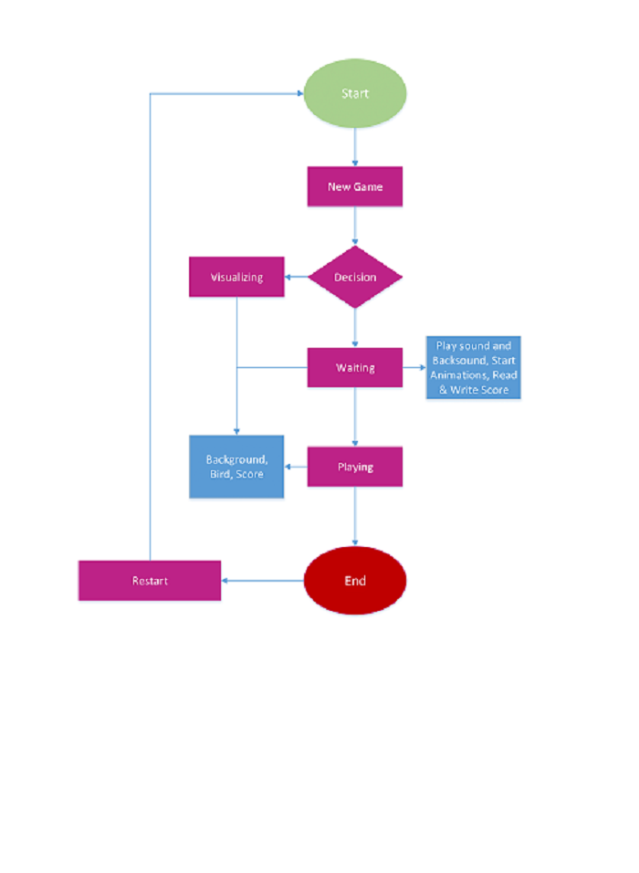

About
Untuk memenuhi tugas project UTS mata kuliah Pemrograman Web, kami dari kelompok 7 akan merancang sebuah game bernama "Clumsy Little Bird". Tujuan dari pembuatan game HTML "Clumsy Little Bird" ini adalah sebagai pembelajaran dasar dalam pengembangan web serta pemahaman pokok terhadap pembuatan sebuah game. Dengan memanfaatkan HTML, CSS, dan JavaScript, kami dapat mempelajari bagaimana cara membuat kerangka dasar game dengan tepat, mengatur interaksi pemain, dan menerapkan aturan main yang cukup sederhana dan mudah dipraktikkan.
Game Scenario
Premis Game
Dalam game ini, pemain mengontrol seekor burung yang harus menavigasi jalan melintasi serangkaian pipa-pipa dengan menekan tombol untuk membuat burung itu terbang.
Gameplay
Tantangan
Tingkat kesulitan meningkat seiring bertambahnya skor, pipa-pipa akan muncul lebih cepat dan celah di antaranya menjadi lebih sempit.
Elemen Visual
Game Flowchart
Berikut merupakan gambar dari flowchart game yang akan kami rancang
Flowchart tersebut menunjukkan urutan tindakan dan keputusan dalam permainan. Dimulai dengan start lalu new game, setelah itu decision yang mengarah ke visualizing (mengatur background dan skor) dan waiting (play sound, animation, etc.). Selanjutnya playing, disini adalah proses saat pengguna memainkan game, memanggil handle input dan memperbarui pipa. Jika burung tertabrak pipa/batas layar maka lanjut ke end. Pada proses end pengguna dapat restart dan mengulang game dari awal sehingga terjadi game loop pada proses tersebut.
Our Team

Haykal Hardya Anggara
Anggota 1
Haykal Hardya Anggara, berumur 19 tahun. Posisi saya pada tim ini yaitu sebagai Programmer.
Kimberlie Cindy K.
Anggota 2
Kimberlie Cindy Kolopaking, berumur 19 tahun. Posisi saya pada tim ini yaitu sebagai Designer.
Luthfi Azmi Sa’diyah
Anggota 3
Luthfi Azmi Sa’diyah, berumur 20 tahun. Posisi saya pada tim ini yaitu sebagai Project Manager.